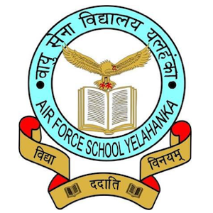

Air Force School Yelahanka Banglore

Strive to success the main motive of our school.Students of our school does everything for their classmates.
We live with harmony with everyone.Team spirit lies in each and every student of our school.
Our school , for each grade only has two sections due to the reason of having less separation in students.
Welcome to
Air Force School Yelahanka
Air Force School, Yelahanka has been successfully imparting quality education for the past 44 years. This school was established initially as Nursery School during 1970-71 in the temporary building (T - 55) to cater to the educational needs of Tiny Tots of the station.
Junior Wing
LKG to Class I - The school follows the syllabus prescribed by the Air HQ, New Delhi.
Senior Wing
Class II to Class X - The school follows the syllabus prescribed by the Air HQ, New Delhi.
OUR VISION
- Envisions a robust, vibrant and holistic school education that will engender excellence in every sphere of human endeavour.
- To provide quality education and thus promote intellectual, social and cultural vivacity among its learners.
- To provide a stress-free learning environment that will develop competent, confident, enterprising and global citizens, who will promote harmony and peace.
- To instil a sense of social justice in the students and sensitize them to the needs of the environment and the community.
- To include high moral values, scientific temper and a spirit of enquiry in students to give them the competitive edge.
OUR MISSION
- To recognize the individuality & creativity in each student.
- To provide a learner - friendly environment.
- To emphasize the moral, social, emotional, physical and intellectual development.
- To emphasize moral values that will allow children to act with thought fulness and compassion towards humanity.
- To provide academic excellence, comprehensive development, emotional intelligence, physical fitness, life skills and disaster management skills.
OBJECTIVES
- Continuous Improvement of the Organization
- Creation of a learning organization, in which "We teach students and not content".
- Developing Synergic Relationships: between the teacher and the taught.
- Developing Leadership qualities in the Staff as well as the Students, to empower them to be able to become successful and self-reliant citizens and face life with confidence and poise.